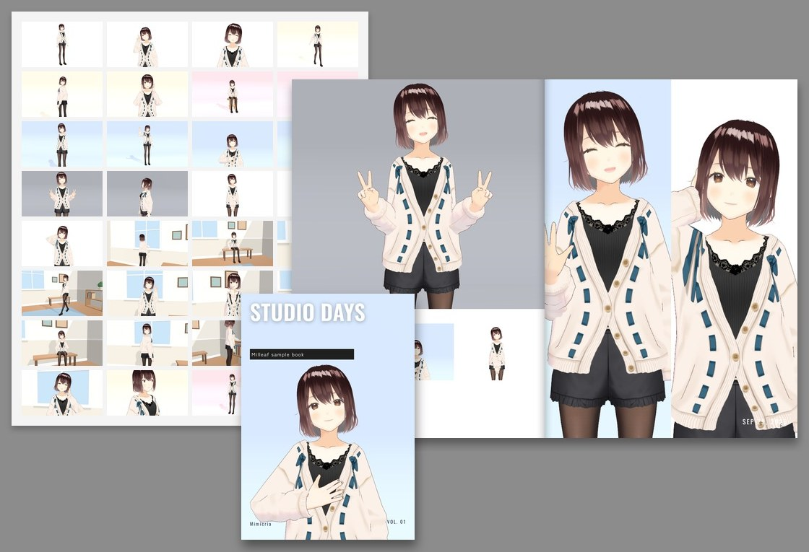
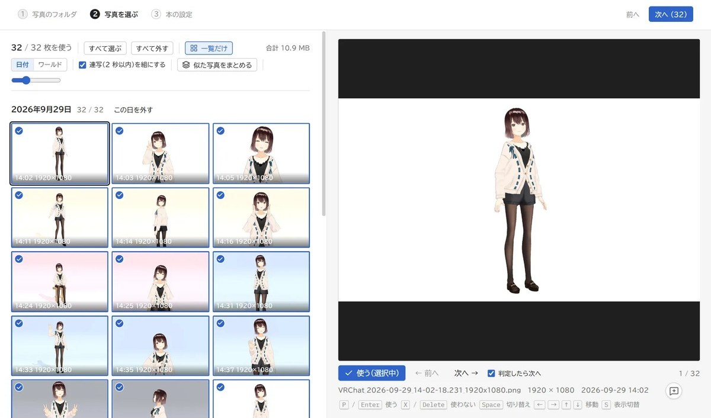
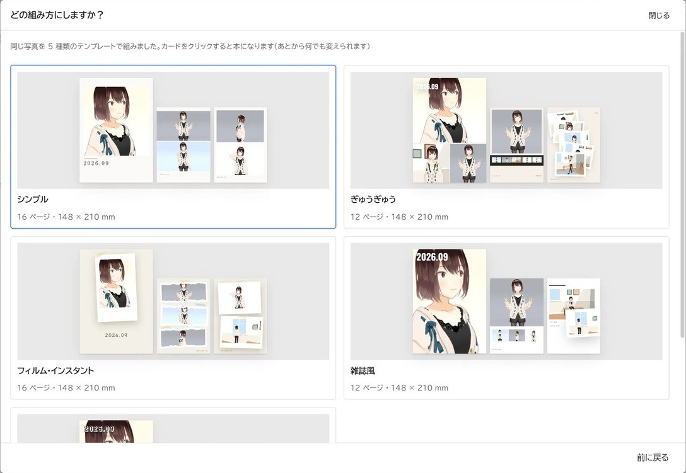
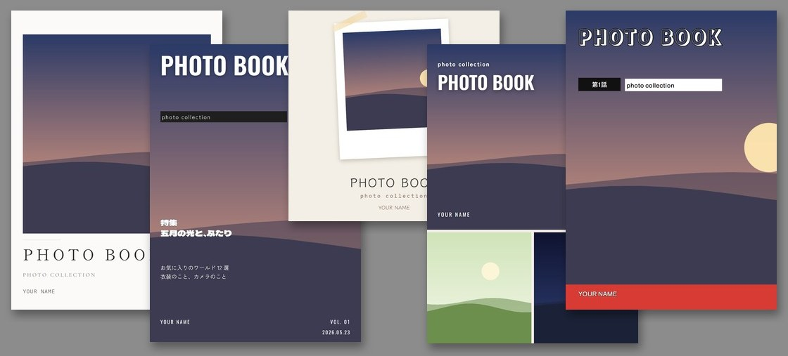
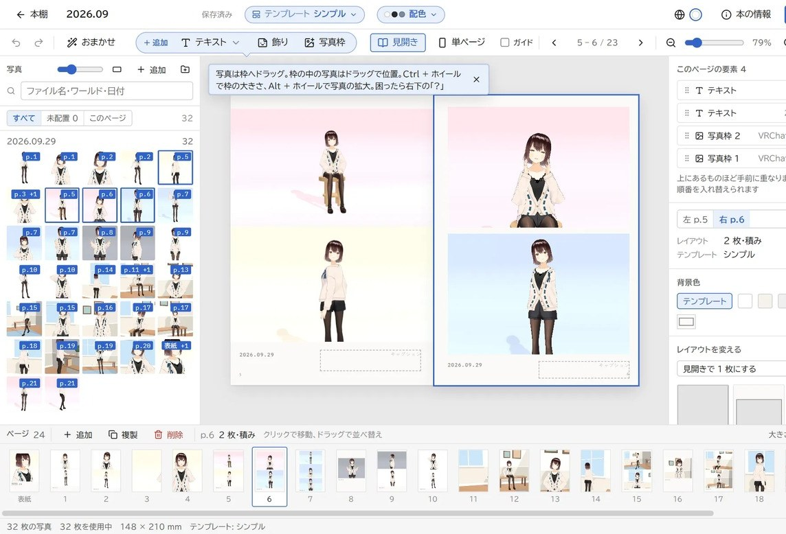
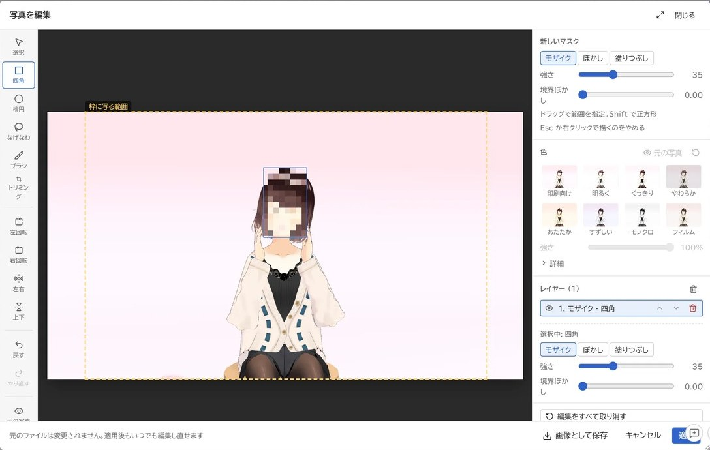
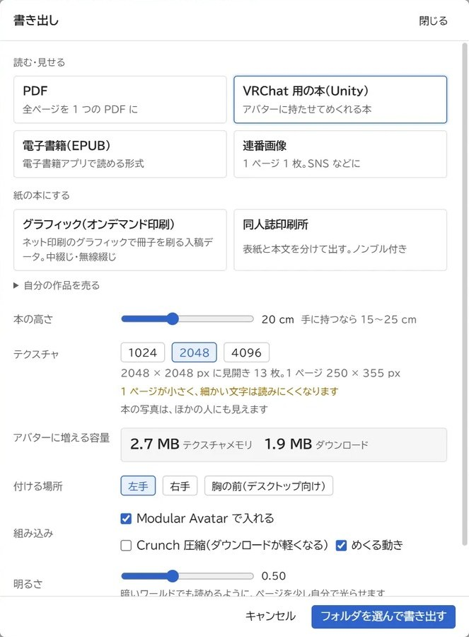
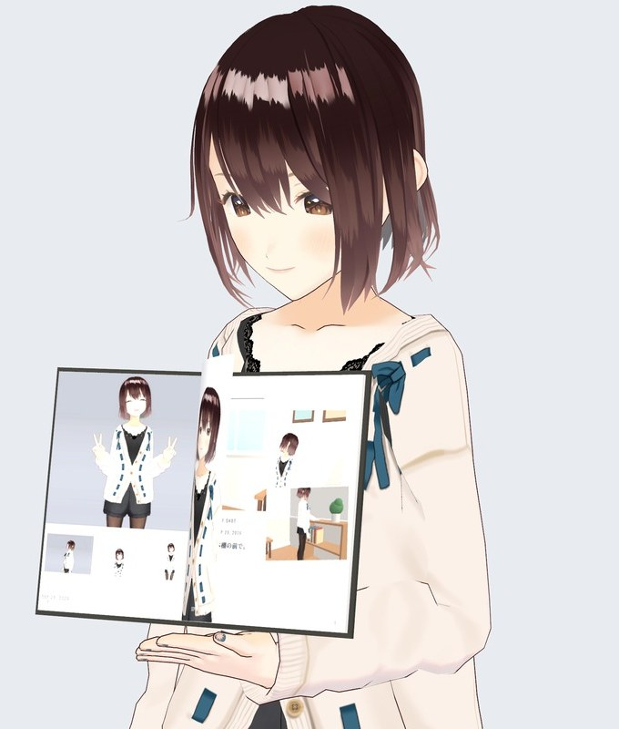

撮りためた思い出を、本にしませんか？
Milleaf は、VRChat のスクリーンショットから写真集を作る Windows アプリです。フォルダを選ぶと、似た写真をまとめて、テンプレートに合わせて写真を並べます。
- 発売日
- 2026年10月10日（土）
- 価格
- 体験版
- 無料。書き出しは1日3回までです。
- 書き出せる形
- PDF、連番画像、電子書籍（EPUB）、印刷所の入稿データ、VRChat の中で読める本（unitypackage）
- 動作環境
- Windows 10 / 11（64bit）
- 表示言語
- 日本語 / English / 한국어 / 繁體中文 / 简体中文

写真がたくさんあっても大丈夫！選別支援機能つき！

おまかせでかんたん作成！

はじめから入っているテンプレート 5 種

自動配置で気に入らないところはこだわり編集可能です！

色調補正、モザイクやぼかし加工もアプリの中で！

VRChatに持っていける本、PDF から入稿データまで

アバターに持たせることができます！
